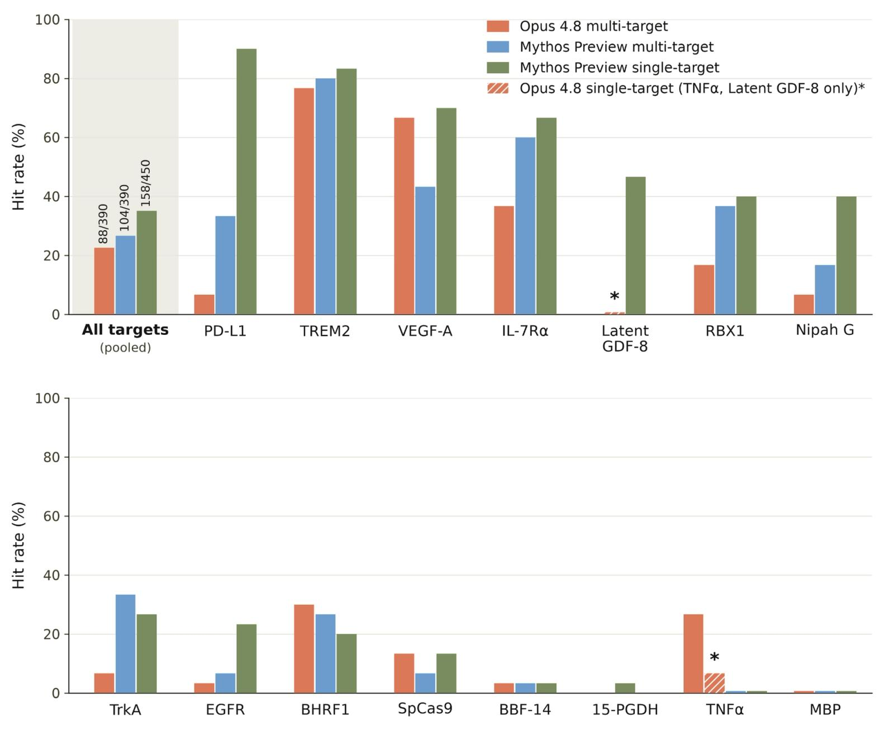
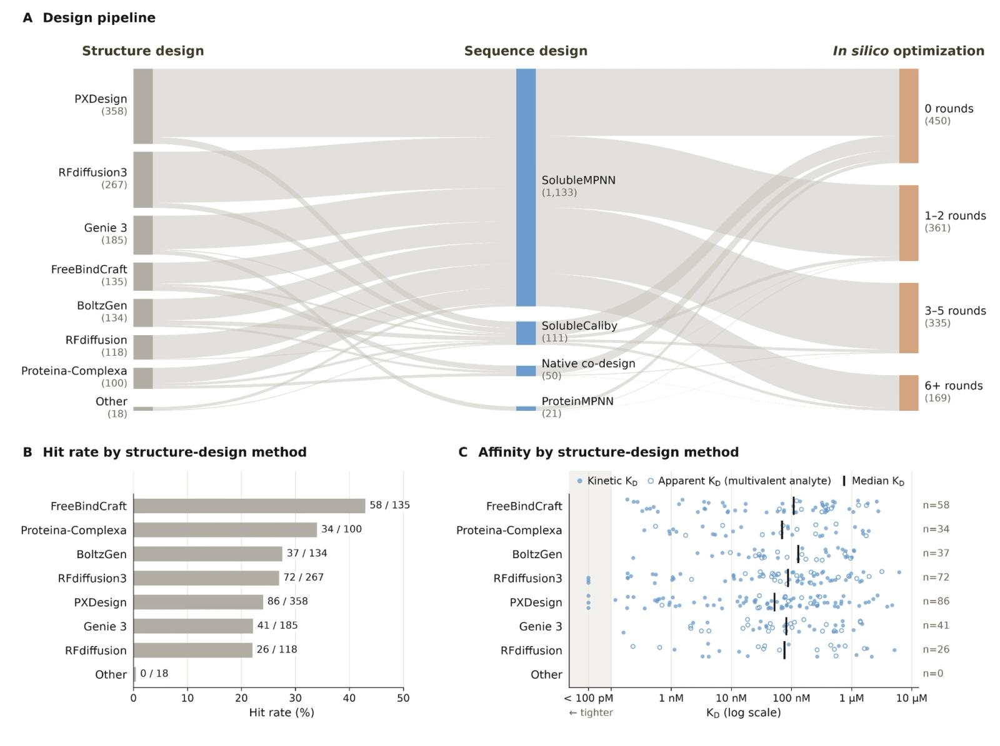
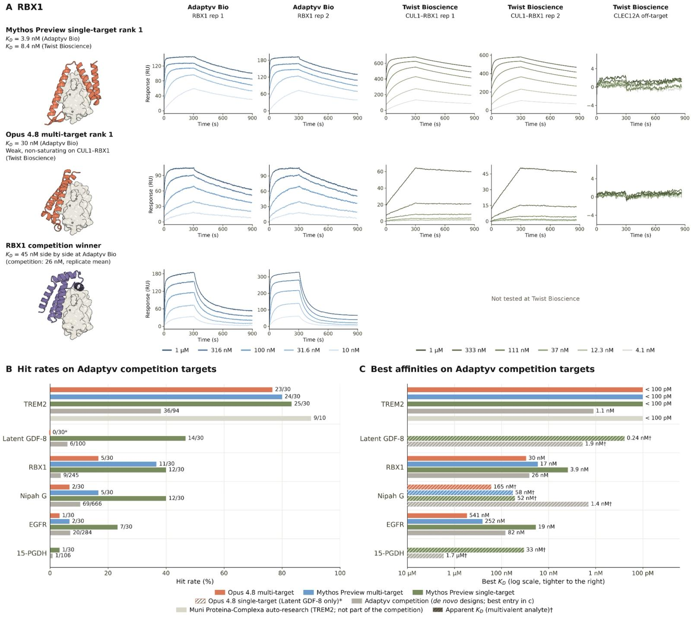
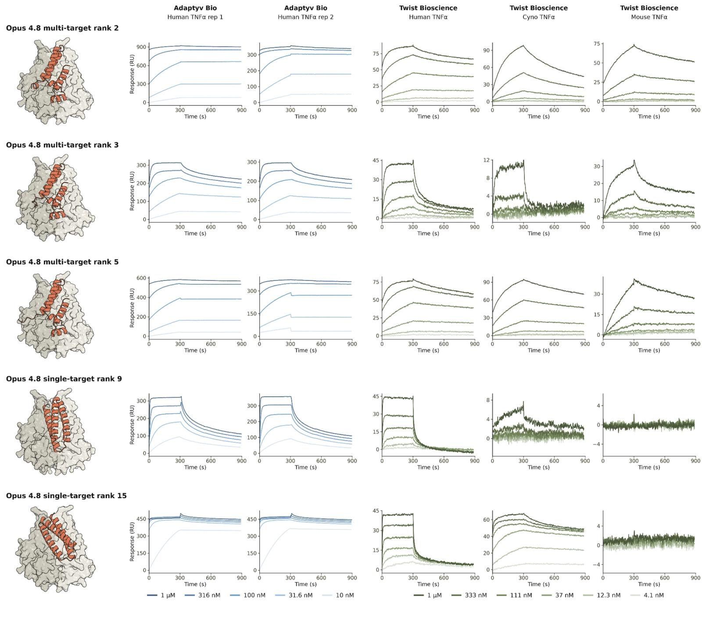
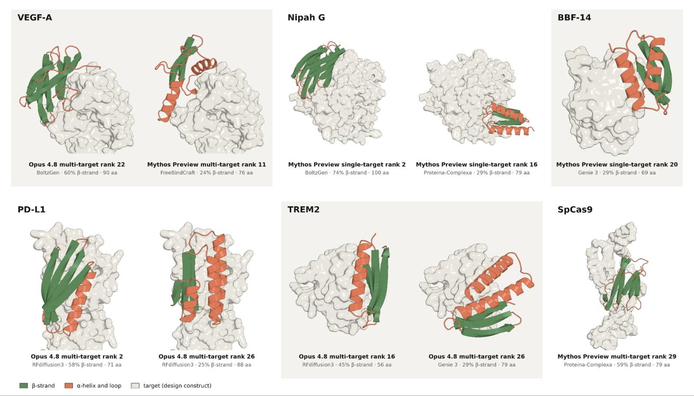
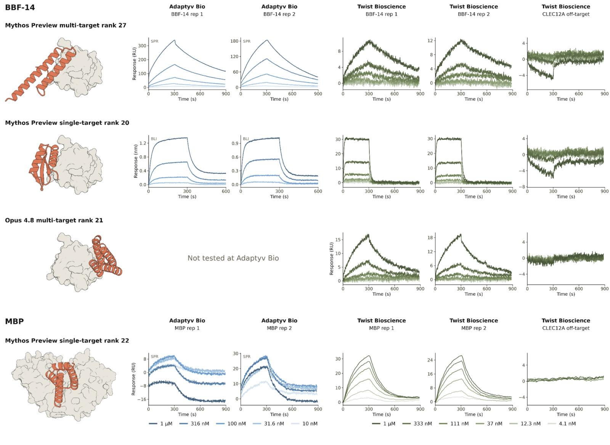
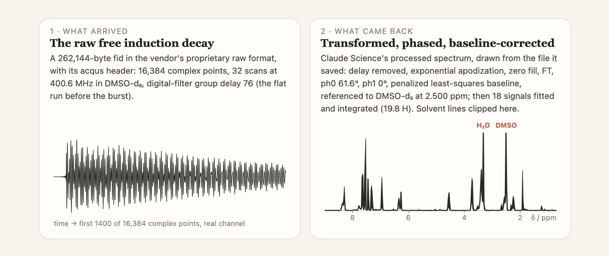
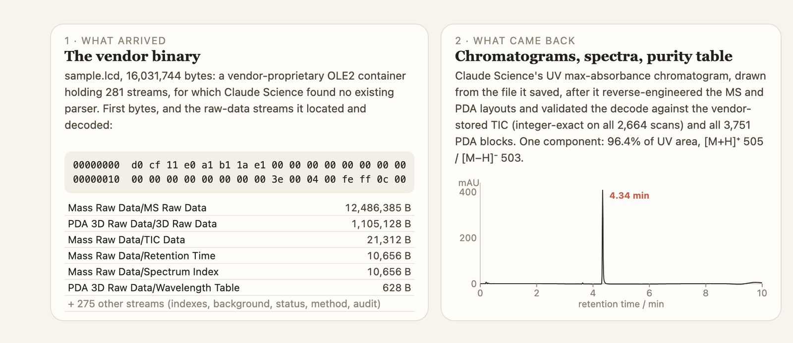

Summary: In this post, we share two results that show how Claude can help life scientists increase the pace of their research. In the first, we tested Claude’s ability to design protein binders from scratch, a key task representative of the early parts of the drug design process and one that has historically taken a specialist weeks or months per target. Claude (Mythos Preview and Opus 4.8) designed protein binders against 15 targets, and succeeded against 14 of them. Between 22% and 35% of its individual designs bound successfully, depending on the setup, compared to the 10-15% that is typical in protein design campaigns today. Some of its strongest designs bound several times more tightly than the best previously published result. In the second example, we evaluated whether Claude can accelerate chemical analysis. Claude Opus 5, a generally available model, was given NMR and LC-MS data (the data that allows chemists to assess the identity and purity of the compounds they work with). Provided with only a contract lab’s raw files and a two-sentence prompt, Claude returned finished results in 23 and 19 minutes, matching the lab’s own analysis on hydrogen counts and purity (96.4% versus 96.33%). These examples demonstrate how Claude can reduce the time and computational expertise currently required to make progress on complex scientific tasks. The pace of AI-enabled discoveries has quickened over the past few months. The bulk of these discoveries have been in areas where verification is relatively fast. In mathematics, for example, agents have begun to work their way through unsolved problems: Erdős problems that have stood for decades are falling at a rate of several a month, and we recently shared how Claude improved on a longstanding lower bound on the Riemann zeta function.
AI models are also beginning to hasten progress in experimental fields where verifying the results is more complex and expensive, such as in the life sciences. In this post, we share the results of two experiments into Claude’s scientific capabilities. First, we present findings from our investigation into Claude’s performance on a protein design campaign, showing that Claude can design protein binders against a variety of targets as well as (or even better than) leading human experts. Second, we share how Claude Opus 5 performed on an analytical chemistry task, demonstrating how general-access models can support the routine and time-intensive aspects of research.
The protein design and analytical chemistry tasks described below are representative of the work that makes up some parts of the early stages of the drug development process. Accelerating these phases is one component of our much larger effort to speed up drug development end-to-end, many aspects of which have more to do with policy and operational bottlenecks than with improvements in core scientific capabilities.
The results that we’re sharing today were obtained with a combination of our Mythos and Opus models. While life science research tasks are currently blocked in our most capable model, one of our highest priorities is to launch an access program for scientists, and we expect to share more on this soon. In the meantime, Opus 5 remains our most capable generally available model.
Claude designs proteins
When we announced Claude Mythos 5, we shared that we were experimenting with the model to accelerate parts of the drug design process. As an ongoing part of this work, we have been investigating Claude’s ability to design minibinders for multiple protein targets. A minibinder is a small protein designed to latch tightly onto a target protein. Binding is how a large proportion of modern medicines work: they attach to a target and inhibit, activate, or deliver something to it. Designing a new binder (known as de novo design) has historically taken protein engineers months of computation, optimization, and screening per target. In recent years, machine-learning models that can design proteins and rank which are most likely to bind have greatly expedited the protein design process. But these models still generally require days (and often weeks) of laborious orchestration by computational experts. And although general reasoning models like Claude can help both experts and non-experts more efficiently design proteins computationally, validating that data in a wet lab (where scientists physically test chemicals, drugs, and other biological substances) still takes weeks.
We have now received wet lab data back for the first of these experiments, a multi-arm protein design campaign against 15 targets using Claude Opus 4.8 and Mythos Preview. Our external evaluators, Adaptyv Bio and Twist Bioscience, independently produced and tested Claude’s designs in the lab, finding that of the 15 targets we designed against, Claude successfully designed binders against 14 of them. These include high-affinity binders1 against at least six targets, and binders matching or exceeding the best reported affinity against at least four targets. Affinity is a measure of how strongly a protein binds to its target; high-affinity binders are generally needed to achieve a therapeutic effect because they make the drug effective at lower doses, reducing the risk of side effects and the cost to manufacture them.
Mythos Preview and Opus 4.8 achieve overall hit rates—how many of the designs are, in fact, binders—of 26.7% and 22.6%, respectively, when designing against all targets simultaneously in a 48-hour session. 10 to 15% is typical in protein design campaigns today.2
After assessing Claude’s ability to design against multiple targets, we wanted to understand whether having it focus on a single target at a time would improve its performance, especially given that this better represents the approach typically taken by a protein engineer. Indeed, we found that Mythos Preview achieves an overall hit rate of 35.1% when designing against each target separately using multiple 24-hour sessions.

This campaign was carried out with minimal human involvement3 beyond the information we provided Claude in our initial prompt (link). We expect that in the hands of expert protein designers this approach would yield even stronger results, especially if they give Claude active guidance and feedback on intermediate results.
The campaign
We began our protein design campaign by selecting multiple targets4 that are commonly used in protein design benchmarks, including all of Adaptyv Bio’s BenchBB. Because these targets have been studied extensively, we can compare our results against published hit rates and affinities. We also chose two novel targets, 15-PGDH and GDF-8, from Adaptyv Bio’s most recent competitions to ensure Claude was able to design against targets without drawing upon pre-recorded successes in its training data or from online search (for all targets, we required Claude to check for and ensure that its designs were original).
We then prompted Claude to design protein binders against these targets in Claude Science. For this, we took two approaches. The first was a multi-target mode, where Claude designed against all targets simultaneously in a single Claude Science session. The second was a single-target mode, in which each session addressed one target and sessions for all targets ran in parallel.
We ran Opus 4.8 and Mythos Preview in multi-target mode with 48 hours of wall time and up to 12,500 NVIDIA H100 hours of compute for running specialized protein design and folding models. We also ran Mythos Preview in single-target mode with 24 hours of wall time and up to 2,500 NVIDIA H100 hours of compute for each target.5
To emulate the resources available during a typical protein design campaign, we gave Claude the following:
- An extensive protein design prompt6 that was also included in the agent context;
- Access to the internet and a corpus of resources, such as papers, on protein design;
- Connectors for Google Drive, Slack, Gmail, and BioRxiv;
- Access to GPUs for running specialized protein design and folding models;
- No limits on token and sub-agent budget within the allotted time, and fast mode enabled.
After giving Claude the prompt, we left the model to execute autonomously. We provided no additional scientific, technical, or operational guidance after we initiated the campaigns.
Our only involvement was granting access approvals (such as network access requests) and monitoring the infrastructure to ensure the sessions were running. Claude conducted all of the work that goes into designing a binder, which can take a human operator weeks. It chose where on each protein target to design against; generated candidate structures and sequences by orchestrating several structure design, sequence design, and co-folding models (models that predict the structure of a protein, together with whatever it binds, in a single pass); ran the designs through multiple cycles of in silico optimization; and computationally screened for novel, diverse candidates that would express, stay soluble, and bind.
For each of the 15 targets, we asked Claude to design 30 protein binders. Claude did this by operating publicly available specialist protein design and co-folding models that the field already uses. Claude’s designs were then sent to Adaptyv Bio and Twist Bioscience to validate.

Claude’s performance on the targets
By the end of this effort, we produced 354 binders against 14 of 15 targets using a total of 1,320 designs. This represents a significant contribution to the total corpus of publicly available de novo protein designs; for example, the two largest collections, proteinbase.com and the collection curated by Overath et al., consist of approximately 770 binders out of 5,700 designs against 40 targets. Below, we share three examples highlighting Claude’s capabilities, and one showing its limitations. You can find more detail in our technical report (link).
Claude’s designs are competitive with entries in Adaptyv Bio’s protein design competition
We found that for the targets Adaptyv Bio has run competitions for, Claude performs at or beyond the level of the top participants on both hit rate and affinity. Against RBX1 (a small protein that drives the targeted destruction of specific regulatory proteins), Mythos Preview in single-target mode achieved a 40% hit rate, compared to a 3.7% hit rate among participants. Its top-ranked design was a high-affinity binder that outperformed the winning design, which was among 245 designs entered.

Claude designs species cross-reactive binders against TNFα, a challenging, therapeutically relevant target
Interestingly, Opus 4.8, and not Mythos Preview, succeeds on TNFα, a target multiple expert groups have struggled with. TNFα is a signaling protein released by the immune system to trigger inflammation, and blocking it is the therapeutic basis for some of the most impactful drugs ever made, including Humira. It’s a challenging target to design against because of its multimeric structure, which requires targeting a binding site in the groove formed by two proteins. Although Mythos Preview was unsuccessful, Opus 4.8 designed multiple binders, including some that worked across species, binding human, cynomolgus monkey, and mouse TNFα, which is important for conducting animal studies. We’re not sure why Opus 4.8 was successful on this target and Mythos Preview was not. When we assess our models' capabilities, we do so holistically. Given the inherent complexity of protein design, it’s unsurprising that there would be specific areas where an overall less capable model could still outperform one that was generally more capable.

Claude designs fold-diverse binders with β-sheets
Most computationally designed binders are bundles of α-helices, a protein secondary structure consisting of coils. β-sheets, in which extended strands of amino acids must line up side by side, are harder to design and more prone to misfolding and aggregation (when protein molecules stick to each other instead of staying separate and properly folded). Claude designed 15 confirmed binders across six targets that contain at least 20% β-strand, demonstrating its ability to reason about protein structure.

Claude struggled against some targets
Certain targets remained a challenge for Claude, including BBF-14 and maltose-binding protein (MBP). BBF-14 is a β-barrel-shaped protein that does not exist in nature: it was itself de novo designed, and it is now used as a benchmark for binder design precisely because of its novelty. MBP’s structure is also especially difficult. MBP is a large, flexible bacterial protein with a smooth, water-loving surface that makes it a good lab reagent. This leaves a binder very little to grab on to. Claude still managed to produce three independent BBF-14 binders—one from each design arm, and each built on a different backbone—with modest (sub-micromolar to micromolar) affinities. Against MBP, however, none of the 90 designs was confirmed to have bound to the target, although one demonstrated a weak, reproducible binding signal.

To better understand how well Claude performed across these design campaigns, we intend to follow our experiments with more extensive characterization to confirm our hit rates and affinity measurements. In the meantime, we are sharing the prompts we used for these campaigns, as well as all in vitro and in silico data we generated.7
Agentic biological discovery is dual-use
The uplift provided by the increasingly autonomous research capabilities of AI models will undoubtedly speed the development of human therapies and fundamental scientific discoveries. However, such capabilities are also dual-use: without robust safety measures, they could enable bad actors to perform dangerous research, such as the development of bioweapons. As we work to deliver these capabilities safely via trusted access programs, protein design and other dual-use research biology capabilities remain unavailable for general access in Claude Fable 5. However, as you’ll see below, our Opus-class models are capable of remarkable scientific work.
Claude runs the analytical chemistry workflow
Where the protein binder campaign tested Claude’s ability to design new molecules, the second experiment tested its ability to interpret measurements of molecules already made. Characterizing a compound is cumbersome work; much like protein design, it requires chemists to perform many rounds of measurement, analysis, and iteration. For example, every time a chemist creates a molecule, they must establish whether it is what they intended to produce and how pure it is. This is typically done with nuclear magnetic resonance (NMR) spectroscopy. An NMR spectrum is a series of peaks, each corresponding to a hydrogen atom, or a group of equivalent hydrogens, somewhere in the molecule. The location of the peaks shows chemists what each hydrogen atom is attached to, and the size of the peak shows how many hydrogens it represents. Confirming a structure is one of the most time-consuming steps in synthetic chemistry; for every compound, a chemist has to match each peak in the spectrum to an atom in the proposed structure by hand.
The other technique, used mainly to assess purity, is liquid chromatography–mass spectrometry (LC-MS), which first separates the sample into its individual components as they flow through a column, then records how much of each is present based on its ultraviolet absorbance, before measuring the molecular mass of each one. For both techniques, the instrument run itself takes only a few minutes (two to three for a routine proton NMR spectrum; about 10 for an LC-MS run). The tedious part is analyzing the output. After NMR and LC-MS are run, each instrument produces a raw file in the manufacturer’s own format that is meant to be opened in that manufacturer’s (or other specialist) software.8
Given how painstaking it is to process and interpret these files, we wanted to see how a generally available model such as Claude Opus 5 would perform at this task.9 Supplied with only a contract lab’s raw files for a routine quality-control sample and a short plain-language prompt,10 with no vendor software and no operator, Claude, working within Claude Science, returned processed NMR and LC-MS results in 23 and 19 minutes, respectively, working in parallel. Its results matched the lab’s own processing—hydrogen counts per peak were within 0.08 ¹H of the lab’s, and its purity was measured at 96.4% versus the 96.33% of the lab.

For the NMR data, Claude converted the raw data from the instrument into a calibrated spectrum and a table of 18 peaks, with a hydrogen count for each. Next, as a chemist would, it flagged four broad peaks as hydrogens that were probably attached to nitrogen or oxygen. It then proposed the standard check: add heavy water to the NMR sample, which swaps those hydrogens out so their peaks shrink or vanish. (Independently, the lab had run this same check three days after the first measurement.) Given the raw file from the heavy-water run, Claude quantified what had changed in the data, caught and corrected an overstatement in its first reading (its first pass reported that all four flagged peaks had disappeared, but its own self-check showed that only two had), and arrived at the same conclusion as the lab’s operator.

The LC-MS instrument files use an undocumented vendor format. Claude worked out how the data was encoded, then confirmed it had read the file correctly by reproducing the instrument's own recorded totals for all 2,664 scans before analyzing anything. It then delivered all the outputs a chemist would expect: the separation trace, mass and UV spectra, a purity table, the compound’s molecular mass, as well as reusable code for reading such files, alongside its own list of caveats about the trustworthiness of the results (it noted, for example, that this class of instrument gives the mass only to the nearest whole unit).
Ordinarily, a chemist does all this analysis by hand. This typically takes half an hour to an hour per sample for a therapeutically relevant small molecule (the lab’s own records show about two minutes of hands-on processing per NMR spectrum, with the LC-MS report following about two hours after the sample was loaded onto the instrument). Claude Science processed and interpreted both files in parallel within those 25 minutes. Claude also produced a written report in that time, whereas the lab’s finished report for this sample arrived four days after the first spectrum was acquired—a fairly standard lag time given that they analyze molecules one at a time, and work may crop up in between.
Beyond the increased efficiency, Claude’s run also showed a degree of scientific judgment, for instance in proposing the very same follow-up experiment the contract lab had independently run. As these models continue to improve, we expect Claude’s scientific judgment to become more acute.
To try this yourself in Claude Science, give Claude a raw NMR or LC-MS file and ask the model to confirm the compound’s identity and purity.
Conclusion
Both of the examples above demonstrate how AI models can accelerate research in the life sciences by reducing the expertise, cost, and time involved in scientific discovery. In chemistry, Claude is automating analyses that chemists have historically done by hand. In protein design, Claude can execute binder design campaigns end-to-end with minimal input, producing binders that match or surpass the best previously published designs.
Protein minibinders are not a standard therapeutic modality for drugs and even for the common drug modalities, such as monoclonal antibodies and small molecules, designing a high-affinity binder is just the first step in the process of generating a drug-like molecule. However, we view this work as foundational, and are extending it so that Claude can run the entire development process end-to-end across all drug modalities.
Further reading
Below is a list of documents that provide further technical depth and more detailed information about the results described above:
- Prompts and data for the protein design campaign;
- Protein design technical report;
- Chemical analysis technical report.
Footnotes
- We consider binders to be high-affinity if they have at most single-digit nanomolar equilibrium dissociation constants (KD < 10 nM).
- Derived by calculating overall de novo protein binder hit rates on https://proteinbase.com/.
- This consisted of approving certain requests made by Claude (e.g., network access requests, code execution requests), resolving infrastructure issues outside of the protein design sessions, and ordering the generated designs for experimental validation.
- In total, we selected 16 targets (the default species was human where relevant). In alphabetical order, they are: 15-PGDH, BBF-14, BHRF1, Cas9, EGFR, GDF-8 (Latent), GDF-8 (Mature), IL-7Rα, Maltose Binding Protein (MBP), Nipah virus Glycoprotein G, PD-L1, RBX1, TNFα, TREM2, TrkA, and VEGF-A. We present results for 15 of 16 targets, as the experimental data for one target, GDF-8 (Mature), were inconclusive due to target aggregation and non-specific stickiness.
- 15-PGDH and latent GDF-8 were not used in multi-target mode. Opus 4.8 was run in single-target mode against three targets: TNFα, latent GDF-8, and mature GDF-8.
- Consisting of roughly 30,000 tokens, shared here.
- Prompts, computational models of the designed protein complexes, and experimental data can all be found here.
- For NMR, the raw signal (a “free induction decay”) as written by the spectrometer; for LC-MS, the instrument’s binary run file. Both are raw proprietary instrument files.
- We have previously shared work on Claude’s performance analyzing NMR data against standard software.
- The NMR prompt, in full: “i have a raw 1H FID: process it: FT, phase, baseline-correct. show me the spectrum. then pick peaks and integrate: give me a table with δ (ppm), multiplicity, J (Hz), and integral.” The LC-MS prompt: “Process the raw LCMS file: extract chromatograms and mass spectra, and summarize with figures.”